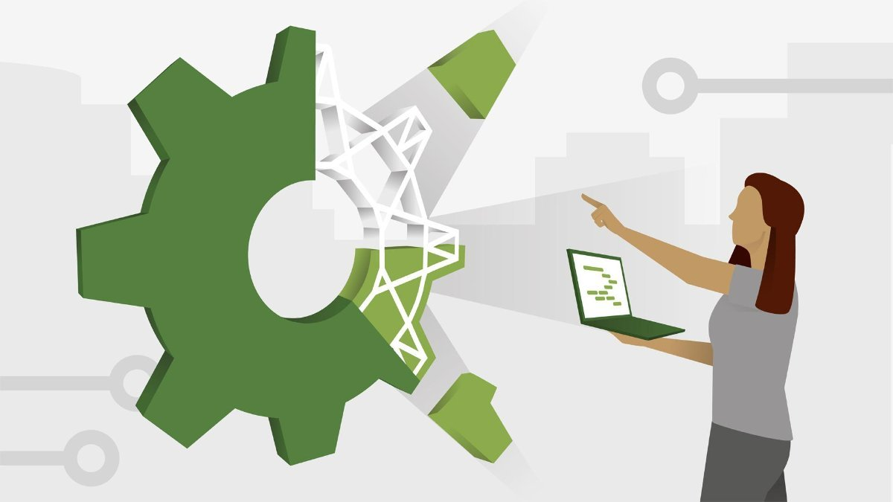
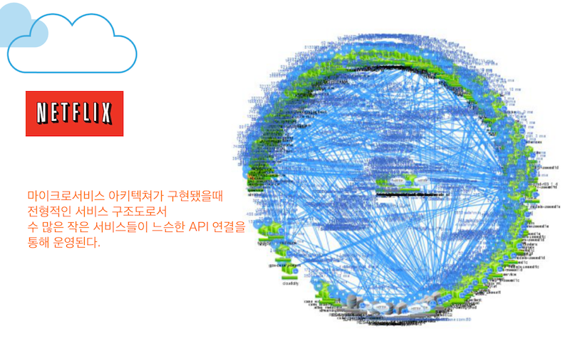
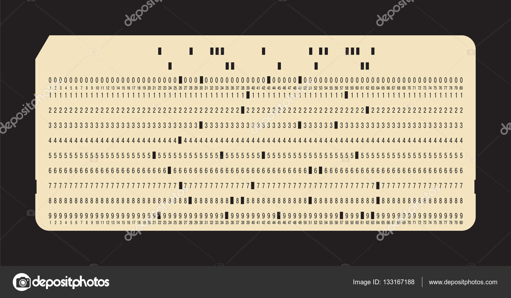

소프트웨어 아키텍트
- 프로그래머
- 코드와 동떨어져서는 안된다.
- 최고의 프로그래머이며 나머지 팀원들의 생산성을 극대화 할 수 있는 설계를 하도록 방향을 이끌어준다
소프트웨어 아키텍처

시스템을 구축했던 사람들이 만들어낸 시스템의 형태
컴포넌트로 분할하는 방법, 분할된 컴포넌트를 배치하는 방법, 컴포넌트가 서로 의사소통하는 방식에 따라 정해진다.
소프트웨어 시스템이 쉽게 개발, 배포 운영 유지보수 되도록 만들어진다.
가능한 한 많은 선택지를, 가능한 한 오래 남겨두는 전략을 따라야 한다.
아키텍처의 주 목적은 “시스템의 생명주기를 지원하는 것”이다. 시스템을 쉽게 이해하고, 쉽게 개발하며, 쉽게 유지보수하고, 또 쉽게 배포하게 해주는 것이 좋은 아키텍처이다.
아키텍처의 궁극적인 목표는 시스템의 수명과 관련된 비용은 최소화하고, 프로그래머의 생산성은 최대화 하는데 있다.
개발
시스템 아키텍처는 개발팀이 시스템을 쉽게 개발할 수 있도록 해야한다.
팀 구조가 작을 때 : 예를 들어 개발자 다섯명 정도로 구성될 정도로 작다면 *모노리틱 시스템을 개발
팀 구조가 클 때 : 예를 들어 일곱명씩 구성된 총 다섯팀으로 구성될 정도로 크다면 팀별 단일 컴포넌트로 개발
* 모노리틱 프로그램 : 컴포넌트단위로 분리되지 않고 여러 기능이 하나로 결합된 형태를 띄며 일명 통짜프로그램이라 불린다.
배포
소프트웨어 시스템이 사용될 수 있으려면 반드시 배포할 수 있어야 한다.
배포비용이 높을수록, 시스템의 유용성은 떨어진다. 따라서 소트웨어 아키텍처는 시스템을 단 한번에 쉽게 배포할 수 있도록 만들어야 한다.
- 마이크로서비스 아키텍처 : 컴포넌트 경계가 뚜렷해지고 인터페이스가 안정되므로 시스템을 쉽게 개발할 수 있지만 배포 시 수많은 마이크로서비스를 연결하고 순서를 결정하는 과정에서 오류가 발생 할 수 있다.
모놀리틱 / 마이크로서비스아키텍처 더 알아보기 : https://futurecreator.github.io/2018/09/14/what-is-microservices-architecture/
모놀리틱 아키텍처 vs 마이크로서비스 아키텍처

모놀리틱 아키텍처

마이크로서비스 아키텍처
운영
운영에서 겪는 대다수의 어려움은 단순히 하드웨어를 더 투입해서 해결할 수 있다.
아키텍처는 비용 공식 관점에서 운영보다는 개발, 배포, 유지보수 쪽으로 더 기울어진다.
하드웨어는 값싸고 인력은 비싸다.(운영을 방해하는 아키텍처가 개발, 배포, 유지보수를 방해하는 아키텍처 보다는 비용이 덜든다.)
좋은 아키텍처는 시스템을 운영하는데 필요한 요구를 알려준다. 개발자에게 시스템의 운영방식을 드러낸다. 유스케이스, 기능, 시스템의 필수 행위를 일급 엔티티로 격상시키고 개발자에게 주요 목표로 인식되게 한다. 이를 통해 시스템의 이해가 쉬워지며 개발과 유지보수에 도움이 된다.
유지보수
유지보수는 모든 측면에서 봤을 때 소프트웨어 시스템에서 비용이 가장 많이 든다.
가장 큰 비용은 탐사와 이로인한 위험부담 이다.
탐사 : 새로운 기능을 추가, 결함을 수정할 때 어떻게 고치면 최적일지를 결정할 때 드는 비용
따라서 비용을 줄이기 위해, 시스템을 컴포넌트로 분리하고, 안정된 인터페이스를 두어 서로 격리하는 등 신중하게 아키텍처를 고려해야 한다.
선택사항 열어 두기
소프트웨어는 행위적 가치와 구조적 가치를 지닌다. 소프트웨어를 부드럽게 만드는 것은 구조적 가치이다.
소프트 웨어를 부드럽게 유지하는 방법은 선택사항을 가능한 많이 오랫동안 열어두는 것이다.
여기서 선택사항은 바로 “중요하지 않은 세부사항” 이다.
소프트웨어 시스템 구성요소
- 정책
모든 규칙과 절차를 구체화 한다. - 세부사항
사람, 외부시스템, 프로그래머가 정책과 소통할 때 필요한 요소지만 정책에는 일체 영향을 미치지 않는 것
EX ) 데이터베이스, 입출력 장치, 웹 시스템, 서버, 프레임워크, 통신 프로토콜
아키텍트의 목표는 시스템에서 정책을 가장 핵심적인 요소로 식별하고 동시에 세부사항은 정책에 무관하게 만들 수 있는 형태의 시스템을 구축하는데 있다. 이를 통해 세부사항을 결정하는 일은 미루거나 연기할 수 있게 된다.
좋은 아키텍트는 결정되지 않는 사항의 수를 최대화 한다.
장치 독립성

천공카드

자기테이프
1960년대에는 코드를 입출력 장치와 직접 결합하여 사용했다. 프린터를 인쇄할 일이 있으면 해당 프린터를 직접 제어하는 입출력 명령어를 사용해서 코드를 작성했다.
장치 종속성
오늘날의 운영체제는 입출력 장치를 소프트웨어 함수로 추상화했고, 해당 함수는 단일 레코드를 처리한다. 그리고 오퍼레이터가 해당 추상 서비스를 단위 레코드 장치 중 어디에 연결해야 하는지 운영체제에게 알려준다.
장치 독립성
장치 독립성은 어떤 장치를 사용할지 고려하지 않고도 프로그램을 작성 할 수 있다. 이는 정책을 세부사항으로부터 분리하는 형태이다. 어떤 장치를 사용할지에 대한 결정을 연기시킨다.
결론
좋은 아키텍트는 세부사항을 정책으로부터 신중히 가려내고, 정책이 세부사항과 결합되지 않도록 엄격하게 분리한다. 이를 통해 정책은 세부사항에 관한 어떠한 지식도 갖지 못하게 되며, 어떤 경우에도 세부사항에 의존하지 않게 된다. 좋은 아키텍트는 세부사항에 대한 결정을 가능한 한 오랫동안 미룰 수 있는 방향으로 정책을 설계한다.